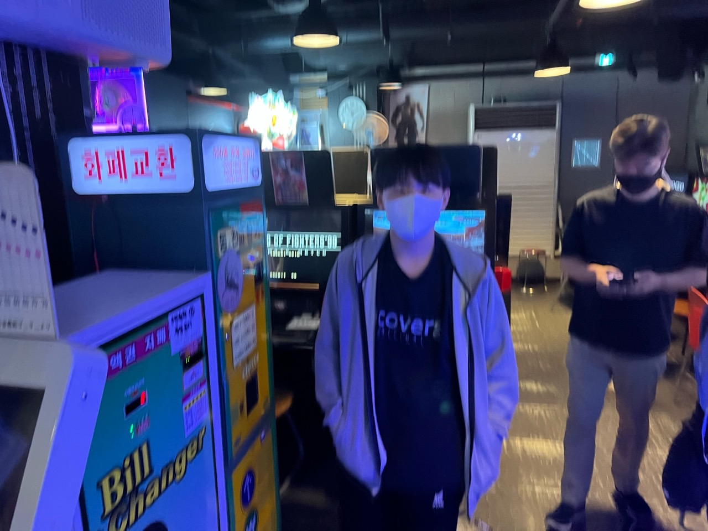
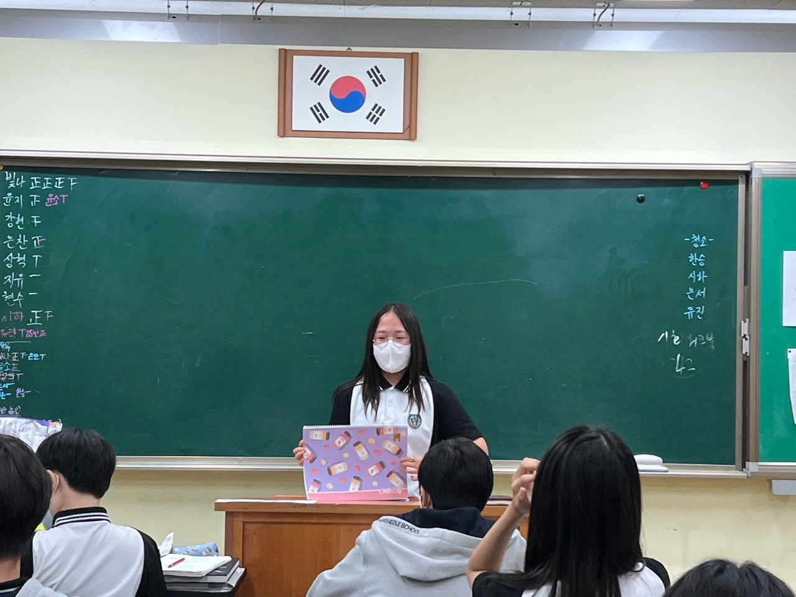

▶ 1학기 활동들
입학식 03.02 (수) | 우리가 중학교를 처음 접한 날 학교폭력예방교육 03.03 (목) | 멈춰! 대통령선거 03.09 (수) | 모든 권력은 국민으로부터 나오니깐 피구해요 저희 국민이에요^^
1학기 학급회조직 03.10 (목) | 무슨 조직이지
학급회조직 03.10 (목) | 뱀조직? 학부모총회 및 봉사 03.17 (목) | 화이팅하세용^^ 진로(표준화검사) 03.23 (수) | 진로탐색 몇번 하는거지 학생인권규정교육 03.24 (목) | 음... 인권규정교육 중요하지.. 음.. 동아리활동 04.01 (금) | 동아리 꿀잼 개교기념일 04.08 (금) | 학교 생일 장애이해교육 04.14 (목) | 이때 애들이 많이 졸았었죠.. 아마? 친구사랑데이 04.21 (목) | 친구야 사랑해.. 아마도 성폭력예방교육 04.28 (목) | 안돼요 싫어요 하지마세요 3학년 지필평가 05.03 (화) | 음... 화이팅!!! 1학년 진로체험 05.03 (화) | 겁나 많이하네 3학년 지필평가 05.04 (수) | 시험 겁나 하시넴 1학년 진로체험 05.04 (수) | ??? : 이거 할 시간에 피구하겠다
어린이날 05.05 (목) | 우리 아직 어린이임 
재량휴업일 05.06 (금) | 4일 연속 쉰다.. 이건 천국? 근데 왜 학원은 안 쉬지 교통안전교육 05.12 (목) | 현장체험학습 05.13 (금) | 여행을 떠나요~ 즐거운 마음으로~ 판교청소년수련관으로~..? 봉사 05.19 (목) | 봉사봉사 동아리활동 05.20 (금) | 도도돌ㅇ아ㅏ아리 지방선거일 06.01 (수) | 아.. 졸려 현충일 06.06 (월) | 전국 각지에서 나라를 위하여 목숨을 바친 애국선열과 국군장병들에게 추모합시다 동아리활동 06.10 (금) | 동아리도 많이하네 2/3학년 지필평가 07.05 (화) | 우리의 미래야 1학년 진로체험 07.05 (화) | 요고 너무 많이 한다 2/3학년 지필평가 07.06 (수) | 화이팅하세요! 1학년 진로체험 07.06 (수) | 너무 많이한다 2/3학년 지필평가 07.07 (목) | 3일 연속은 좀.. 1학년 진로체험 07.07 (목) | 3일 연속은 좀.. 동아리활동 07.08 (금) | 동아리 참 많이 하네
학급회조직 07.14 (목) | 홈피 개발을 공식적으로(?) 공개한 날 
직업탐색 07.15 (금) | 탐색탐색 인터넷중독예방교육 07.18 (월) | 인터넷 멈춰!!! 빛깔있는 학급 07.19 (화) | 전국~ 노래자랑~ 봉사 07.20 (수) | 봉사 참 좋아요
여름방학식 07.20 (수) | 이거지 그치 이거지.. 근데 여름 특강이 우릴 기달린다
여름방학 07.21 (목) ~ 08.16 (화) | 여름특강아, 우리 방학이 어디갔어요?
▶ 2학기 활동들
개학식 08.17 (수) | 음... 졸리다
봉사 08.18 (목) | 봉사 좋아요
학교폭력예방교육 08.25 (목) | ??? : 멈춰!!!!
직업인특강 08.31 (수) | 재밌으려나
동아리활동 09.02 (금) | 동활이화알동
추석 09.09 ~ 09.12 (월)(금) | 1년 중 가장 길게 쉬는 공휴일
친구사랑데이 09.15 (목) | 'Maybe' I love mt friend
자살예방교육 09.22 (목) | 언제 어디서나 긍정적 마인드
재난대피교육 09.29 (목) | 119신고보다는 대피먼저! 119신고보다는 나 먼ㅈ.. <<ㅍㅍㅍ
개천절 10.03 (월) | 개가 천번 절한다의 약자
2/3학년 지필평가 10.05 (수) | 아니 시험 왜 이렇게 많이 봐
1학년 진로체험 10.05 (수) | 와 선배님들 시험 볼 때 우린 논다
2/3학년 지필평가 10.06 (목) | 음.. 100점 기원
1학년 진로체험 10.06 (목) | 재밌으면 장땡. 함정은 '재밋으면'
동아리활동 10.07 (금) | 동아리 몇 번하는지 알려주셈요
한글날 10.09 (일) | 나랏말싸미 듕귁에 달아 문자와로 서르 사맛디 아니할세
대체공휴일 10.10 (월) | '대체' 왜 쉬는거지
한마음스포츠의 날 10.14 (금) | 스포츠? 오히려 좋아
학생인권규정교육 10.27 (목) | 학생인권규정.. 영상 보려나
동아리활동 11.04 (금) | 동아리 얼마나 하는거야
총학생회선거 11.08 (화) | 아니 이거 뭐하는 거여?
재량휴업일 11.17 (목) | 아싸 쉰다(?)
3학년 지필평가 11.22 (화) | 음.. 우리 미래다
1학년 진로체험 11.22 (화) | 이땐 조용히 하자
3학년 지필평가 11.23 (수) | 화이팅하세요
1학년 진로체험 11.23 (수) | 할 말이 없다
3학년 지필평가 11.24 (목) | 황팅
1학년 진로체험 11.24 (목) | 얼마나 하는거여
교육과정대토론회 11.25 (금) | 토론 못하는데 어카지
성매매예방교육 12.01 (목) | 설마 성매매를 하겠어?
흡연예방교육 12.08 (목) | 담배를 왜 피는거지
직업탐색 12.16 (금)| 탐색탐색탐색
기독탄신일(성탄절) 12.25 (일) | 9월 17일날 고백해서 커플되면 이때 100일임. 근데 커플이 되야 함
학급자치 12.29 (목)| 이땐 뭘 하려나ㅏ
낙원제 12.30 (금) | ??? : 트러블메이커~
방학/종업식 01.03 (화) | 한 달 뒤에는 시험의 인생 시작이다ㅏㅏ....?